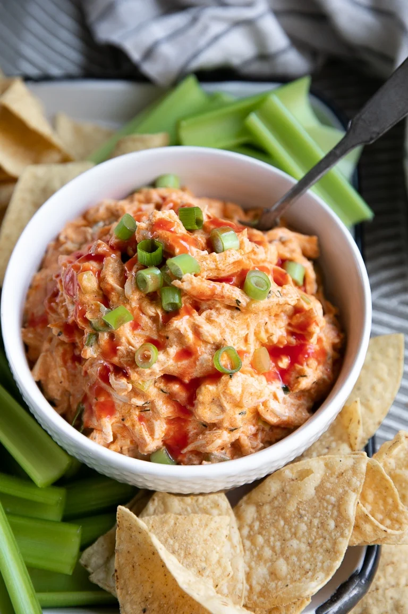

Crockpot Buffalo Chicken Dip

Description:
This creamy, cheesy, zesty dip makes a delicious party dish that provides the taste of buffalo hot wings with less mess. While this particular Buffalo Chicken Dip recipe may take a little longer to heat up than the oven-baked versions, you'll never have to worry about your dip going cold during the party (not that it will be around long)! The ingredients include cooked chicken, full-fat cream cheese, ranch dressing, hot sauce, ground black pepper, garlic powder, onion powder, and shredded cheddar and mozzarella.
As the name of the recipe suggests, you will need a 4 quart or larger crockpot to cook all the ingredients once mixed. Regarding the chicken used in this recipe, these instructions will be for poached chicken breasts, but leftover cooked chicken breasts, pre-shredded rotisserie chicken, or canned chicken (as a last resort) will work. The prep time is 10 minutes and the cook time is 1-2 hours (if cooking on HIGH) or 2-3 hours (if cooking on LOW). However, if you're not using some type of pre-cooked chicken, be sure to add 30 minutes to the total time to allow for poaching the chicken. This recipe should provide 12 servings.
Additional notes: This recipe can be prepared without chopped green onions depending on food preferences. For best results, shred the cheeses from a block versus using pre-shredded cheese. If using chicken thighs instead of breasts, this will result in a greasier dip.
Ingredients:
- 4 boneless skinless chicken breasts (cooked and shredded)
- 12 ounces full-fat cream cheese (cubed)
- 1/2 cup ranch dressing
- 1 cup hot sauce (Frank's RedHot or similar)
- 1 teaspoon freshly ground black pepper
- 1 teaspoon garlic powder
- 1 teaspoon onion powder
- 1 cup shredded cheddar cheese
- 1 cup shredded mozzarella cheese
- 1 cup chopped green onion (optional)
Steps:
- Prepare the chicken by bringing a large pot of water to a boil over high heat. Carefully add the chicken breasts to the pot and make sure they are fully submerged in the water. Return the water to a boil and cover the pot with a tight fitting lid. Remove the pot from heat and allow the chicken to poach for approximately 30 minutes, or until fully cooked. Once cooked, remove the chicken from the pot and set aside until cool enough to shred.
- As the chicken cooks, measure and prepare the remaining ingredients.
- Shred the chicken into bite-sized pieces and transfer to the bowl of a 4 quart or larger slow cooker. Mix in the remaining ingredients with the shredded chicken (cream cheese, ranch dressing, hot sauce, black pepper, garlic powder, onion powder, cheeses, and if desired, green onion)
- Cover the crockpot with its lid and cook on LOW for 2-3 hours (or on HIGH for 1-2 hours) until contents are hot and bubbly. Sprinkle with fresh chopped green onion, additional hot sauce, and additional shredded cheese, if desired. Serve hot with tortille chips, crackers, or veggie sticks.